Your goals come first.
We connect design and development decisions to the problem you need to solve.

Let’s talk ↗✳ STRATEGY. DESIGN. DEVELOPMENT.
GOOD IDEAS DESERVE
EXCEPTIONAL SOFTWARE.
We turn ambitious ideas into websites, apps and software that move your business forward. Thoughtfully designed. Built around you.
01 / WHAT WE DO
Eight connected services. From your first idea to the systems that power your business.
02 / POSSIBILITIES IN PRACTICE
Illustrative product concepts showing how thoughtful design can bring a software idea to life.
03 / WHY LEGITECH.IO
Good software comes from understanding your business as well as the technology.
Get to know us ↗We connect design and development decisions to the problem you need to solve.
Shared milestones and regular feedback keep the work understandable.
Usability, performance and maintainability belong in the conversation from the start.
A focused first release, with a foundation for future improvements.
04 / HOW WE WORK
A connected process, with you involved at every important decision.
Understand your users, map the challenge and agree on priorities.
Explore the experience with clear flows and interactive prototypes.
Build in focused stages with visible progress and regular feedback.
Check the experience, prepare the release and document the essentials.
Maintain your product and plan the next improvements together.
05 / BUILT AROUND YOUR WORLD
Solutions shaped around the way your organisation actually works.
Client intake, document workflows, case coordination and business operations.
↗02Lesson scheduling, student portals, learning resources and progress tracking.
↗03Connected storefronts, product catalogues, checkout and fulfilment workflows.
↗04Customer management, staff portals, reporting and task automation.
↗05Prototypes, focused MVPs and subscription platforms ready for the next stage.
↗06Property portals, service requests, asset information and operational dashboards.
↗06 / TECHNOLOGY WITH PURPOSE
Your requirements guide the stack. We consider the experience, integrations and long-term maintenance before choosing the technology.
07 / IDEAS & INSIGHTS
How to define a first release around the one thing your users need most.
Read article ↗DESIGN & EXPERIENCE · 4 min readWhy a shared prototype can make your next build easier to understand.
Read article ↗AI & AUTOMATION · 4 min readA practical starting point for reducing repetitive work in your business.
Read article ↗Cost depends on the scope, complexity, integrations and level of design required. We start by understanding your priorities, then agree on a scope and estimate before development begins.
A focused website and a custom software platform have very different timelines. Discovery helps define a realistic schedule, milestones and what can be delivered in the first release.
Yes. We can review an existing product, identify its constraints and plan targeted design, performance, integration or feature improvements.
Ownership, licences and handover deliverables are agreed in the project contract before work starts. Third-party tools and open-source components may have their own licence terms.
Yes. Maintenance, updates and further development can be arranged. The support scope, response expectations and costs are agreed for each engagement.
Yes. An MVP focuses on the essential user journey, so you can launch a useful first version and use feedback to decide what comes next.
HAVE SOMETHING IN MIND?
Big ambition. Clear direction. Let’s start there.
Start a conversation ↗